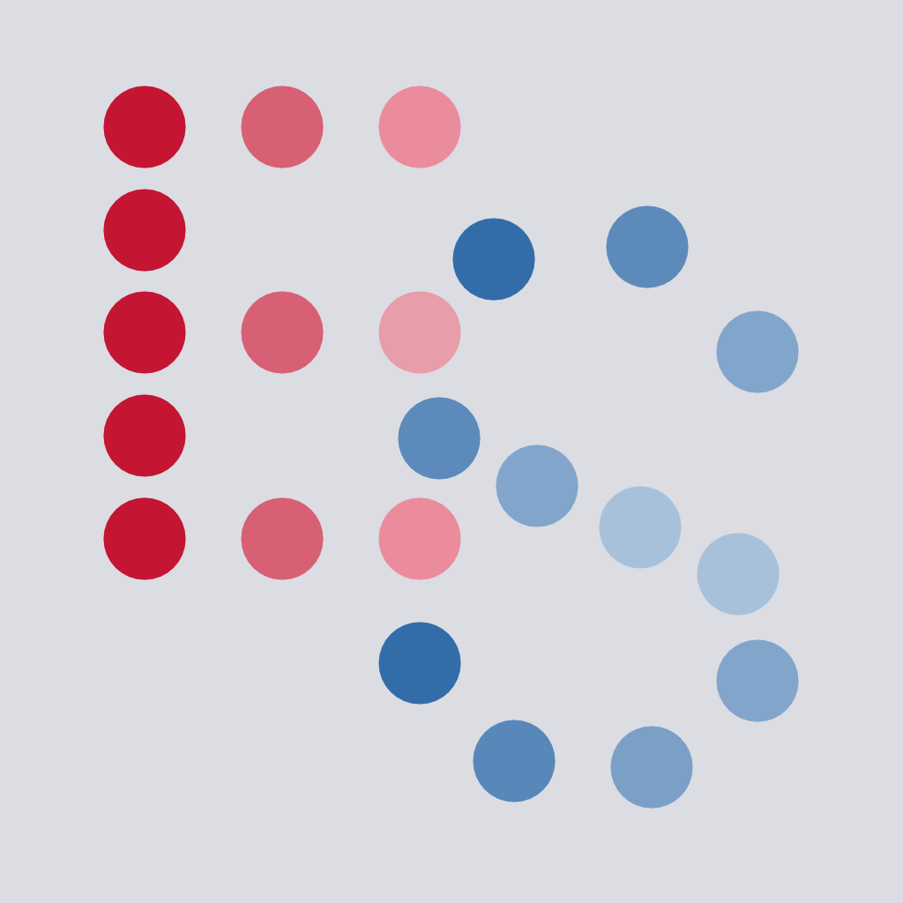

EchoSketch
iPhone / iPad / Mac — App & AUv3 Plugin
EchoSketch turns delay and reverb into something you play through a customizable XY pad.
Assign any parameter to the X or Y axis and sweep delay time, feedback, reverb, modulation, and tone with your finger (or mouse pointer on Mac). The range for each parameter can be set independently, then you can morph between them in real time. It's like a hardware performance controller connected to a deep musical echo engine.

Comprehensive delays
- Four modes — Digital (patterned after a legendary 80s rack delay), Analog (warm, with tape-style pitch glide), Reverse, and Ping-Pong
- Sync to host tempo by note value (1/32 to 1/2, dotted and triplet) or dial in free milliseconds
- Feedback with delay-dependent tone shaping — short delays stay bright, long ones darken naturally, just like classic hardware
Reverb in parallel
- True-stereo convolution reverb: Spring, Plate, and Hall
- Runs alongside the dry signal, tape-echo style — lush space without washing out your repeats
Shape and modulate
- Classic analog-style modulation for chorused, drifting echoes
- Tilt TONE — darken or brighten the whole effect from one control, with a center detent for flat
Built to perform
- HOLD / LIFT — leave the cursor where you drop it, or let it spring back for stutter and momentary gestures
- FREEZE — lock the current wash into an infinite loop and play over it
- MOTION — record a gesture on the XY pad and loop it hands-free
Workflow
- Factory presets plus your own, portable between hosts
- Two looks — light "Trail" and dark "Glow"
- Standalone app (demo loop or live mic/USB input) and AUv3 plug-in
Everywhere you make music
- Universal — iPad, iPhone and Mac, one purchase
- Mac: after installing, open EchoSketch once to register the Audio Unit in your DAW.
- Works in AUM, AudioBus, GarageBand, Logic, and other AUv3 hosts — or standalone with live input.
Use it on a synth, guitar, vocal, or drum loop — then reach for the pad and make it move.